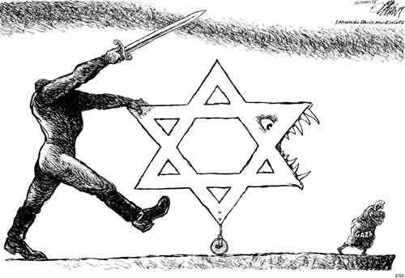

2009-07-25 08:00
Press censorship, preventing Arab political parties from participating in elections, a “Nakba” law which punishes commemorations or public events, followed by banning textbooks that mention it. Then there are the proposed “loyalty oaths”, and now the removal of Arabic names on road signs. Tolerance and civil liberties are not doing very well in Israel. Gaza continues to fester as the largest ghetto on earth and several commentators have made invidious comparisons of Israel and post-Weimar Germany.

And now Antony Lerman asks in the Guardian, “Should we ban ‘Nazi analogies’?”
Now is precisely the wrong time to stifle discussion of Israel’s many problems - or the nature of Zionism - and it may soon be difficult to have these discussions anywhere except outside Israel.
Former Arab Knesset member Azmi Bishara in his essay, “Loyalty to racism,” makes the valid point that all these recent repressive measures have been designed to bolster Zionist ideology and coerce patriotism from Israelis, while eliminating political expression for Israeli Arabs.
Khalid Amayreh asks, in his essay “Why Zionism-Nazism comparisons are legitimate”:
“Were the Nazis ‘Nazi’ only because they created and used gas chambers to incinerate their Jewish and non-Jewish victims? Would the Nazis have been less evil and therefore ‘less Nazi’ if they had annihilated their victims by way of bullets instead of ovens, or by starving them to death as Israel has been doing to the Palestinians?”
The Jerusalem Center for Public Affairs suggests applying Natan Sharansky’s “3D” test to such analogies. However the litmus tests of “demonization, double standards, and delegitimization” will always test pink (especially in the hands of zealots) because the tests themselves are flawed. The issue is not the indisputable fact of the Shoah or the legitimacy of the Israeli state, but its nature. Even the National Socialists came to power legally in 1934.
“The homeland is blood and soil, it is earth bound by blood, it is the Alpha and Omega of all existence”
Certainly anyone making Nazi analogies must proceed delicately - that is to say, as factually and dispassionately as possible - but, despite some differences, there are also many similarities between National Socialism and Zionism that are based on historical co-evolution, and can not be avoided.
Zionism employs racial, ethnic and religious nationalism as a means to promote the interests of a privileged ruling people (“Herrenvolk”) associated with “their” land. “Natural growth” resembles the National Socialist concepts of “Lebensraum” and Israel’s desire to build eastward is what the NS-ers called the “Drang nach Osten.” The annexation of other lands (“Anschluss”), occupation (“Besatzung”), and “voelkisch” (ethnic) ties to the land (“Blut und Boden”) are painful features of the expression of these ideologies. Like the National Socialists, the Zionists’ nationalist philosophy trembles at the fear of “Umvolkung” (loss of nationhood). The Revisionist Zionist, Ze’ev Jabotinsky, whose school of Zionism holds the most currency in Israel today, was an open admirer of Mussolini.
Nazis belittled Jewish “belonging” to the German soil (“Boden”) and to the DNA of the nation (“Blut”). According to Nazis, Jews were a deracinated people who were overly urban, sickly, lived in squalor, and had to be removed. Similarly, we often hear the refrain from Zionists that “there was never a Palestinian people.” Jason Kunin touches on some of these themes in his essay, “A Genuine Peace Movement Cannot be Zionist.”
Benjamin Netanyahu recently attempted to embarrass the German Foreign Minister by using the Israel Project’s strategy of calling the dismantling of settlements “ethnic cleansing” (he actually used the German word “Judenrein”). Avigdor Lieberman, doing his part for Nazi analogies, published 60-year-old pictures of the Mufti with Hitler to tar Arabs with the taint of Nazism.
Should only Zionists get free passes to use Nazi analogies?
National Socialism and Zionism are the anachronistic products of 19th Century German nationalism: Nazism in part the legacy of Fichte and others, and Zionism flowed from the pen of Herzl. Yet both developed out of a common German Romanticism. Assimilated German Jews like Heinrich Heine and Herzl himself were drawn to, if not torn between, simultaneous German and Jewish nationalism.
Nazism and Zionism, then, are cousins, if not brothers.
Finally, there’s this sobering definition of fascism from Robert Paxton (The Anatomy of Fascism, Vintage Books):
[Fascism is] “a form of political behavior marked by obsessive preoccupation with community decline, humiliation or victimhood and by compensatory cults of unity, energy and purity, in which a mass-based party of committed nationalist militants, working in uneasy but effective collaboration with traditional elites, abandons democratic liberties and pursues with redemptive violence and without ethical or legal restraints goals of internal cleansing and external expansion.”
The answer to Lerman’s question should be “no.” Maybe even “hell no.”